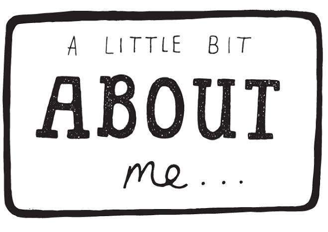
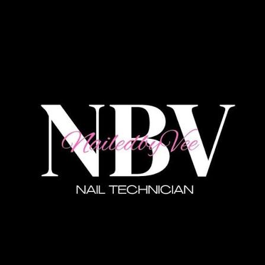

About Me
September 30th, 2026 by Eve Lynch

Hi! My name is Eve Lynch, and I am a Computer Science and Accounting student at the University of the West Indies, Five Islands Campus.
Outside of school, I enjoy playing the steel pan, singing, dancing, and occasionally playing football.
I also love spending time with friends, travelling, and trying new, adrenaline-filled experiences.
Some of my recent favourites include buggy riding, jet skiing, and ziplining, along with an end-of-summer trip to St. Maarten.
I am also a certified nail technician and the owner of Nailed by Vee, a passion that has allowed me to express my creativity and build a business of my own.
And when I’m not doing any of that, you can probably find me making TikToks that never leave my drafts!
Insight on Nailed By Vee's Journey
October 2nd, 2026 by Eve Lynch

The COVID-19 pandemic was the catalyst for my Nailed by Vee journey. In 2022, at the height of the pandemic, I saw an opportunity on social media to develop a skill that would eventually change my life in ways I never imagined.
I came across a nail course advertised on Instagram by one of the island’s most reputable nail technicians, and I thought, “Why not use this time to learn something new?”
I began a six-week course where I learned the foundational skills that I have continued to develop and perfect to this day. However, in those early stages, I lacked the confidence to officially start my brand, Nailed by Vee.
After a year of practicing on my friends and building my confidence, I finally launched Nailed by Vee in December 2023.
Although building my clientele was slow during the first year, I eventually created a loyal client base that has grown into a business capable of supporting my lifestyle today.
It has truly been a journey to get where I am, and I am forever grateful for every step along the way.
Follow my journey on Instagram: @nai.ledbyvee